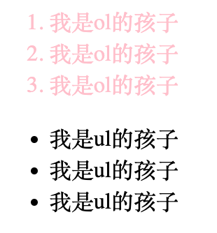
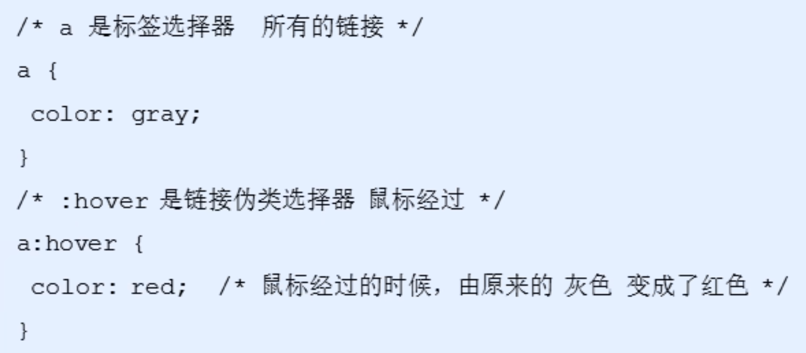
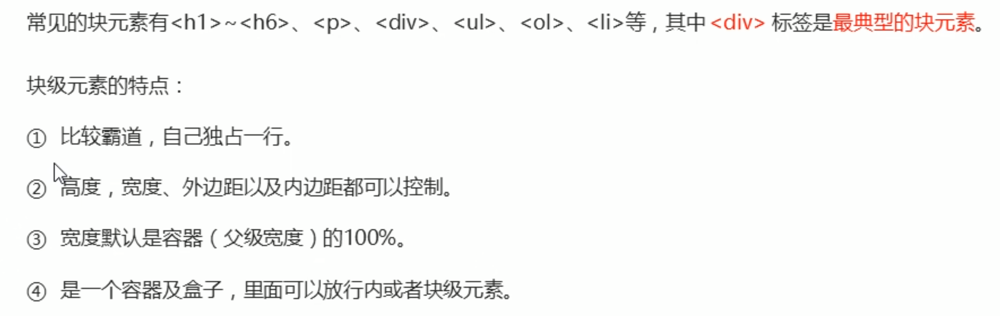
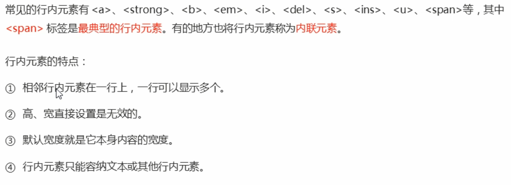
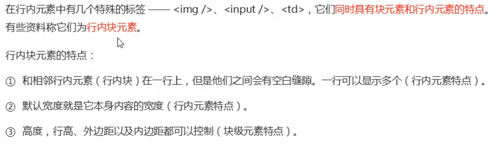
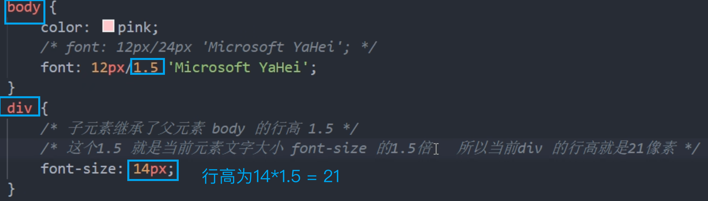
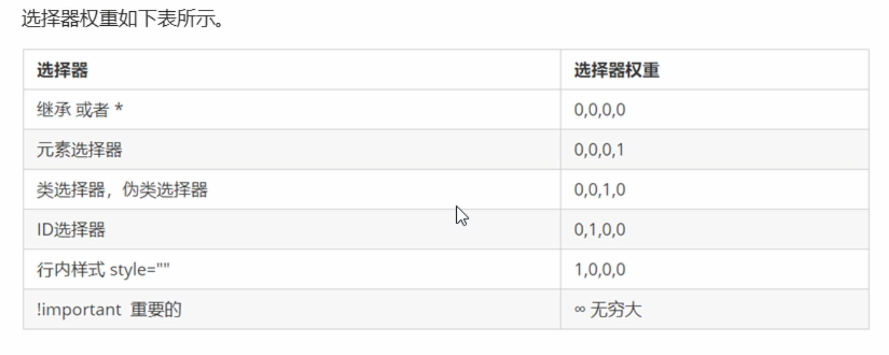
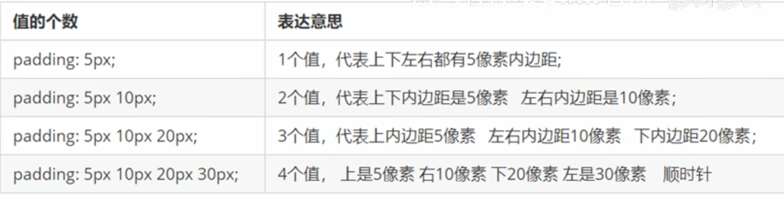

CSS
CSS语法规范
CSS 规则由两个主要的部分构成：选择器以及一条或多条声明。
简单来说：给谁改样式，改哪些样式
- 选择器是用于指定CSS样式的HTML标签，花括号内是对该标签设置的具体样式
- 属性和属性值以“键值对”的形式出现
- 属性是对指定的对象设置的样式属性，例如字体大小、文本颜色等
- 属性和属性值之间用英文“:“分开
- 每组键值对以”;“结尾
| CSS | |
|---|---|
1 2 3 4 | |
CSS代码风格
样式格式书写
紧凑型格式
| CSS | |
|---|---|
1 | |
展开型格式（提倡，更直观）
| CSS | |
|---|---|
1 2 3 4 | |
样式大小写风格
一般使用小写字母
样式空格风格
| CSS | |
|---|---|
1 2 3 4 | |
-
属性值前面，冒号后面，保留一个空格
-
选择器（标签）和大括号中间保留空格
CSS基础选择器&复合选择器
CSS选择器的作用
选择器（选择符）就是根据不同需求把不同的标签选出来这就是选择器的作用。 简单来说，就是选择标签用的。
| CSS | |
|---|---|
1 2 3 | |
以上CSS做了两件事
- 找到所有的h1标签
- 将这些标签的样式，比如颜色改为红色
选择器的分类
选择器分为基础选择器和复合选择器两个大类 。
基础选择器

- 由单个选择器组成的
- 基础选择器又包括：标签选择器、类选择器、id选择器和通配符选择器
标签选择器
| CSS | |
|---|---|
1 2 3 | |
使用html的标签名作为选择器。
作用
把某一类标签全部选择出来，比如所有的<div>标签和所有的<span>标签。
优点
能快速为页面中同类型的标签统一设置样式
缺点
不能设计差异化样式，只能选择全部的当前标签。
类选择器
| CSS | |
|---|---|
1 2 3 4 5 6 7 8 9 10 11 12 13 14 15 16 | |
类选择器口決：样式点定义 结构类(cLass) 调用 一个或多个 开发最常用
id 选择器
id选择器只能使用一次
id选择器和类选择器的区别
-
类选择器（class）好比人的名字，一个人可以有多个名字，同时一个名字也可以被多个人使用。
-
id选择器好比人的身份证号码，全中国是唯一的，不得重复。
通配符选择器
在CSS中，通配符选择器使用“*” 定义，它表示选取页面中所有元素（标签）。
复合选择器
-
复合选择器可以更准确、更高效的选择目标元素（标签）
-
复合选择器是由两个或多个基础选择器，，通过不同的方式组合而成的
- 常用的复合选择器包括：后代选择器、子选择器、并集选择器、伪类选择器等等
后代选择器（重要）
后代选择器又称为包含选择器，可以选择父元素里面子元素。其写法就是把外层标签写在前面，内层标签写在后面，中间用空格分隔。当标签发生眼套时，内层标签就成为外层标签的后代。
语法规范
元素1 元素2 { 样式声明 }
最终改的只有元素2的样式
示例
CSS代码
| CSS | |
|---|---|
1 2 3 4 5 6 7 8 9 | |
HTML代码
| HTML | |
|---|---|
1 2 3 4 5 6 7 8 9 10 11 12 | |
结果：
子选择器（重要）
子元素选择器（子选择器）只能选择作为某元素的最近一级子元素。简单理解就是选亲儿子元素
语法规范
元素1 > 元素2 { 样式声明 }
div > p { key: value; }
并集选择器 （重要）
并集选择器可以选择多组标签同时为他们定义相同的样式。通常用于集体声明
井集选择器是各选择器通过英文逗号（,）连接而成，任何形式的选择器都可以作为并集选择器的一部分。
语法规范
元素1, 元素2 { 样式声明 }

也可以并上后代选择器
伪类选择器
伪类选择器用于向某些选择器添加特殊的效果 ，比如给链接添加特殊效果 ，或选择第1个，第八个元素。
伪类选择器书写最大的特点是用冒号（:）表示，比如：:hover、:first-child 。
因为伪类选择器很多，比如有链接伪类、结构伪类等，所以这里先给大家讲解常用的链接伪类选择器。
链接伪类选择器
| 伪类选择器 | 描述 |
|---|---|
| a:link | 选择所有未被访问的链接 |
| a:visited | 选择所有已被访问的链接 |
| a:hover | 选择鼠标指针位于其上的链接 |
| a:active | 选择活动链接（鼠标按下未弹起的链接） |
为了确保生效，请按照LVHA 的循顺序声明：link - visited - hover -active。
开发中常用的写法

focus伪类选择器
| CSS | |
|---|---|
1 2 3 | |
常用的属性
字体 font
font-family：字体群组
font-size：字体大小（设置body的font-size，但是标题标签不会改变，需要另外进行设置）
font-weight：字体粗细。normal(400) bold(700)
font-style ：设置文本的风格。 normal/italic
字体复合属性：font（节约代码量） font: font-style font-weight font-size/line-height font-family
font-size 和 font-family不能省略
color：定义文本颜色 十六进制/颜色名/RGB代码
text-align：用于设置元素内文本内容的水平对齐方式。
text-decoration ：规定添加到文本的修饰。可以给文本添加下划线、删除线、 上划线等。
text-indent：用来指定文本的第一行的缩进，通常是将段落的首行缩进。
em 是一个相对单位，就是当前元素(font-size) 1个文字的大小，如果当前元素没有设置大小，则会按照父元素的1个文字大小。
line-height ：用于设置行间的距离（行高）。可以控制文字行与行之间的距离。
行间距 = 文本高度 + 上&下间距

背景 background
- 背景颜色 background-color 定义了元素的背景颜色 在背景的最底层，会被image压住
backgound-color: 颜色值一般情况下，默认值是transparent（透明）
- 背景图片 background-image 描述了元素的背景图像。实际开发常见于logo。 或者一些装饰性的小图片或者是超大的背景图片，优点是非常便于控制位置（精灵图也是一种运用场景）
background-image:none/url
- 背景平铺 background-repeat在HTML页面上对背景图像进行平铺
background-repeat: repeat/no-repeat/repeat-x/repeat-y
- 背景位置 background-position可以改变图片在背景中的位置。
background-position: x y;可以使用方位名词（center/top/bottom/left/right）
- 背景图像固定（背景附着） background-attachment设置背景图像是否固定或者随着页面的其余部分滚动 后期可以做视差滚动
background-attachment: scroll（随对象内容滚动）/fixed（固定）
- 背景复合写法 background
当使用简写属性时，没有特定的书亏顺序,一般习惯约定顺序为：
background:背景颜色、背景图片地址、背景平铺、背景图像滚动、背景图片位置;
- 背景颜色半透明 background: rgba(0, 0, 0, 0.3)
CSS 引入方式
内部样式表
内部样式表（内嵌样式表）是写到html页面内部．是将所有的CSS 代码抽取出来，单独放到一个＜style＞标签中。
| CSS | |
|---|---|
1 2 3 4 5 6 | |
- style标签理论上可以放在 HTML 文档的任何地方，但一般会放在文档的标签中
- 通过此种方式，可以方便控制当前整个页面中的元素样式设置
- 代码结构清晰，但是并没有实现结构与样式完全分离
- 使用内部样式表设定CSS，通常也被称为嵌入式引入，这种方式是我们练习时常用的方式
行内样式表
行内样式表（内联样式表）是在元素标签内部的style 属性中设定CSS 样式。适合于修改简单样式.
| HTML | |
|---|---|
1 | |
外部样式表
实际开发都是外部样式表，适合于样式比较多的情况.核心是;样式单独写到CSS文件中，之后把CSS文件引入到HTML页面中使用。
| HTML | |
|---|---|
1 | |
CSS 的元素显示模式
作用：网页的标签非常多，在不同地方会用到不同类型的标签，了解他们的特点可以更好的布局我们的网页。
元素显示模式就是元素（标签）以什么方式进行品示 ，比如<div>自己占一行，比如一行可以放多个<span>。
HTML 元素一般分为块元素和行内元素两种类型。
块元素

- 文字类的元素内不能使用块级元素
<p>标签主要用于存放文字，因此p里面不能放块级元素，特别是不能放div- 同理，h1~h6等都是文字类块级标签，里面也不能放其他块级元素
行元素

- 链接里面不能再放链接
- 特殊情况链接a里面可以放块级元素，但是给a转换一下块级模式最安全
行内块元素

元素显示模式转换
特殊情况下，我们需要元素模式的转换，简单理解一个横式的元素需要另外一种模式的特性
比如想要增加链接＜a＞的触发范围。
-
转换为块元素：display:block
-
转换为行元素：display:inline
- 转换为行内块元素：display:inline-block
CSS三大特性
层叠性
相同选择器给设置相同的样式，此时一个样式就会覆盖（层叠）另一个冲突的样式。层叠性主要解决样式冲突的问题。
层叠性原则：
- 样式冲突，遵循的原则是就近原则，哪个样式离得近，就执行哪个样式
- 样式不冲突，不会层叠
继承性
现实中的继承：我们继承了父亲的姓
CSS中的继承：子标签会继承父标签的某些样式，如文本颜色和字号。简单的理解就是：子承父业。
行高的继承性

优先级
当同一个元素指定多个选择器，就会有优先级的产生。

继承的权重是0
!important的使用：
CSS div { color: blue!important; }
权重叠加：如果是复合选择器，则会有权重叠加，需要计算权重。


盒子模型
1.1网页布局的本质
网页布局过程：
- 先准备好相关的网页元素，网页元素基本都是盒子Box。
- 利用CSS 设置好盒子样式，然后摆放到相应位置。
- 往盒子里面装内容.
网页布局的核心本质：就是利用 CSS摆盒子。
1.2盒子模型的组成
所谓盒子模型：就是把HTML 页面中的布局元素看作是一个矩形的盒子，也就是一个盛装内容的容器。
CSS 盒子模型本质上是一个盒子，封装周国的HTML元素，它包括：边框、外边距、内边距、 和实际内容

边框border
border可以设置元素的边框。边框有三部分组成,边框完度(粗细)边框样式边框颜色
border / border-width / border-style / border-color


border-collapse 属性控制浏览器绘制表格边框的方式。它控制相邻单元格的边框。
边框会影响盒子实际大小
-
边框会额外增加盒子的实际大小。因此我们有两种方案解决：
-
测量盒子大小的时候不量边框
-
如果测量的时候包含了边框,则需要width/height 减去边框宽度
内边距padding
padding / padding-left... 用于设置内边距，即边框与内容之问的距离。

padding也会影响盒子的大小。在盒子原本的大小上，增加padding的大小。
外边距margin
margin用法与padding一致
外边距典型应用（水平居中）
外边距可以让块级盒子水平居中，但是必须满足两个条件
- 盒子必须指定了宽度（width）
- 盒子左右的外边距都设置为auto
| CSS | |
|---|---|
1 2 3 4 5 6 | |
行内元素或者行内块元素水平居中给其父元素添加 text-align:center即可
外边距合并
使用 margin定义块元素的垂直外边距时，可能会出现外边距的合井。
嵌套块元素垂直外边距的塌陷
对于两个嵌套关系（父子关系）的块元素，父元素有上外边距同时子元素也有上外边距，此时父元素会塌陷较大的外边距值。
解决方案：
- 可以为父元素定义上边框。
border: 1px solid transparent; - 可以为父元素定义上内边距。
padding: 1px; - 可以为父元素添加 overflow:hidden。
overflow: hidden;
清除内外边距
在我们向html文件中写入内容时，发现文字或者列表等等内容都无法顶到浏览器的左上角。
网页元素很多都带有默认的内外边距，而且不同浏览器默认的也不一致。因此我们在布局前，首先要清除下网页元素的内外边距。
| CSS | |
|---|---|
1 2 3 4 | |
注意：行内元素为了照顾兼容性，尽量只设置左石内外边距，不要设置上下内外边距。但是转换为块级和行内块元素就可以了